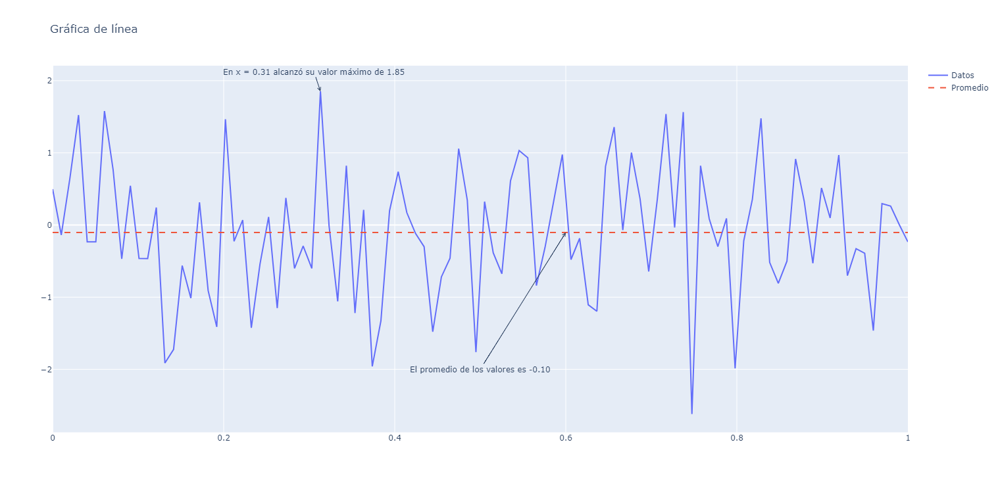

py
links
- Introduction to Python: Absolute Beginner (edX).
-
Introducción al desarrollo de aplicaciones web(edx) ** de aqui es la documentacion
-
Curso de Python Básico Gratis (Web Código Facilito).
venv
requirements.txt
flask
pk@pk:~$ type vvvv
vvvv ()
{
deactivate;
python3.8 -m venv ./.venv;
source ./.venv/bin/activate;
pip install -r requirements.txt;
python app.py
}
pk@pk:~$
pk@pk:~$
flask
ejemplo basico
app.py
import sys
from flask import Flask,request
app = Flask(__name__)
@app.route('/')
def index():
user_agent = request.headers.get('User-Agent')
return '<p>Your browser is %s</p>' % user_agent
@app.route('/processLogin', methods=['POST'])
def process_login():
missing = []
fields = ['email', 'passwd', 'login_submit']
for field in fields:
value = request.form.get(field, None)
if value is None:
missing.append(field)
if missing:
return "Warning: Some fields are missing"
return '<!DOCTYPE html> ' \
'<html lang="es">' \
'<head>' \
'<link href="static/css/my-socnet-style.css" rel="stylesheet" type="text/css"/>' \
'<title> Home - SocNet </title>' \
'</head>' \
'<body> <div id ="container">' \
'<a href="/"> SocNet </a> | <a href="home"> Home </a> | <a href="login"> Log In </a> | <a href="signup"> Sign Up </a>' \
'<h1>Data from Form: Login</h1>' \
'<form><label>email: ' + request.form['email'] + \
'</label><br><label>passwd: ' + request.form['passwd'] + \
'</label></form></div></body>' \
'</html>'
if __name__ == '__main__':
if sys.platform == 'ubuntu':
app.run(debug=True, port=8080)
else:
app.run(debug=True, port=80)
index.html
flask. ejem buenisimo api json
'''
http://127.0.0.1:8080/songs/all
import requests
cancion={
'Artista':'dfasfd',
'Nombre':'jojo'
}
respuesta=requests.get('http://127.0.0.1:8080/songs/all')
print('\n',respuesta.content.decode())
respuesta=requests.post('http://127.0.0.1:8080/songs/new',json=cancion)
print('\n',respuesta.content.decode())
respuesta=requests.get('http://127.0.0.1:8080/songs/all')
print('\n',respuesta.content.decode())
respuesta=requests.patch('http://127.0.0.1:8080/songs/2', json={'Artista':'jijiji'})
print('\n',respuesta.content.decode())
respuesta=requests.get('http://127.0.0.1:8080/songs/all')
print('\n',respuesta.content.decode())
'''
# Ejemplo API
from flask import Flask, request, jsonify
import json
app = Flask(__name__)
song_db = [
{
"id": 0,
"Artista": "Air Supply",
"Nombre": "Making Love Out of Nothing at All"
},
{
"id": 1,
"Artista": "Bonnie Tyle",
"Nombre": "Total Eclipse Of The Heart"
},
{
"id": 2,
"Artista": "George Michael",
"Nombre": "Careless Whisper"
},
{
"id": 3,
"Artista": "Berlin",
"Nombre": "Take My Breath Away"
},
{
"id": 4,
"Artista": "Queen",
"Nombre": "Bohemian Rhapsody"
}
]
# GET | returns the whole catalog
@app.route("/songs/all", methods=["GET"])
def get_all():
return jsonify(song_db), 200
# GET | returns an entry by an id
@app.route("/songs/<int:song_id>", methods=["GET"])
def get_song(song_id):
song_result = next(
(song for song in song_db if song["id"] == song_id), None)
if song_result:
return (jsonify(song_result), 200)
else:
return "404 Not Found", 404
# GET | returns all songs with the same name
@app.route("/songs/search/<string:song_name>", methods=["GET"])
def search_song(song_name):
songs = [song for song in song_db if song_name in song["Nombre"]]
if songs:
return (jsonify(songs), 200)
else:
return "404 Not Found", 404
# POST | creates a new entry in the catalog
@app.route("/songs/new", methods=["POST"])
def post_song():
if request.data:
song_data = json.loads(request.data)
song_id = max([song['id'] for song in song_db])+1
song_artist = song_data["Artista"]
song_name = song_data["Nombre"]
new_song = {
"id": song_id,
"Artista": song_artist,
"Nombre": song_name
}
song_db.append(new_song)
return jsonify(new_song), 200
else:
return "400 Bad Request", 400
# DELETE | deletes an entry in the catalog by an id
@app.route("/songs/<int:song_id>", methods=["DELETE"])
def delete_song(song_id):
for idx, song in enumerate(song_db):
if song["id"] == song_id:
song_db.pop(idx)
return "Register Deleted", 200
return "Not Found", 404
# PUT | replaces an entry in the catalog, creates a new entry if it doesn't exist
@app.route("/songs/<int:song_id>", methods=["PUT"])
def put_song(song_id):
if request.data:
song_data = json.loads(request.data)
song_artist = song_data["Artista"]
song_name = song_data["Nombre"]
edit_song = {
"id": song_id,
"Artista": song_artist,
"Nombre": song_name
}
for idx, song in enumerate(song_db):
if song["id"] == song_id:
song_db[idx] = edit_song
return (jsonify(edit_song), 200)
edit_song["id"] = max([song['id'] for song in song_db])+1
song_db.append(edit_song)
return (jsonify(edit_song), 200)
else:
return "Bad Request", 400
# PATCH | edits an entry in the catalog, fails if it doesn't exist
@app.route("/songs/<int:song_id>", methods = ["PATCH"])
def patch_song(song_id):
if request.data:
for idx, song in enumerate(song_db):
if song["id"] == song_id:
song_data = json.loads(request.data)
for edit_key in song_data:
song[edit_key] = song_data[edit_key]
return (jsonify(song), 200)
return "Not Found", 404
else:
return "Bad Request", 400
if __name__=='__main__':
app.run(debug=True, port=8080)
json
Las estructuras de JSON tienen una traducción directa a estructuras Python:
- Los objetos JSON son representados como diccionarios en Python
- Los arrays JSON son representados como listas en Python
- true y false en JSON son valores del tipo boolean en Python
- Las cadenas en JSON son cadenas en Python
- Los números en JSON son float o integer, según corresponda, en Python
Por este motivo, las funciones para leer y escribir ficheros JSON son muy sencillas de utilizar. En ambos casos recurrimos a la biblioteca JSON, así que lo primero que debemos hacer es:
import json
Lectura
La función para leer un fichero JSON es json.load. Como parámetro un fichero, así que una forma normal de usarla es:
with open(“nombre_fichero.json”, 'r') as f:
data = json.load(f)
Después de ejecutar esto, la variable data contendrá un diccionario con los datos cargados del fichero. Si por ejemplo hubiéramos cargado el fichero con los datos del usuario James visto en la sección anterior, ahora data[‘user_name’] sería “James” y data[‘messages’] sería una lista Python con los mensajes publicados por James.
Escritura
Volcar una estructura Python a un fichero JSON es igual de sencillo. Supongamos que tenemos la siguiente inicialización de la variable datos:
datos = {
"user_name": "James",
"password": “007”,
"messages": [(1532648502.113984, “mensaje 1”), (1532648642.729385, “mensaje 1”)],
"email": session['email'],
"friends": session['friends']
}
Entonces guardar los datos en el fichero correspondiente sería:
with open(“james.bond@mi6.uk”, 'w') as f:
json.dump(datos, f)
sesiones
Ya hemos dicho en varias oportunidades que el protocolo HTTP no tiene estado, que no recuerda. ¿Qué significa eso en la práctica? Que necesitamos información adicional para implementar una “conversación” entre cliente y servidor. Esta idea de conversación, donde ambas partes recuerdan lo que han hablado hasta el momento, se llama sesión.
Aunque el concepto o la duración de una sesión puede variar en distintos entornos, básicamente es el conjunto de interacciones entre cliente y servidor en un lapso de tiempo razonable.
La primera vez que un cliente realiza una petición, después de un tiempo sin interactuar, el servidor abre una sesión. Las subsecuentes peticiones desde ese cliente se consideran dentro de la misma sesión. Si pasa mucho tiempo sin que el cliente realice una petición, el servidor asume que ya no está conectado y termina la sesión.
La biblioteca Flask nos ofrece este concepto de sesión. Pero si HTTP no tiene información específica que permita identificar al usuario o la sesión, ¿cómo sabe Flask a qué usuario corresponde una determinada petición?
Existen al menos 3 formas de que una petición HTTP transporte información que permita identificar al usuario o la sesión:
- Cookies: las cookies son pequeños ficheros que se adjuntan a una respuesta HTTP, con información de identificación de usuario. En sucesivas peticiones HTTP, el navegador incluye ese fichero automáticamente, por lo que el servidor podrá tener la identificación de ese usuario.
- Campos ocultos: en los formularios que el servidor envía a cliente para que sean completados, incluyo un campo del tipo input que no se muestra al usuario; ese campo lleva información que cuando los datos del formulario se envíen de vuelta al servidor le servirá para identificar al cliente.
- Reescritura de URLs: aunque nos parezcan iguales, el servidor introduce automáticamente pequeñas modificaciones a las URLs; de esta forma, la URL específica que solicite permitirá al servidor identificar al cliente.
La buena noticia es que, generalmente, el mecanismo que se use para transportar la información de sesión no es visible al desarrollador de la aplicación web. Esto es exactamente lo que ocurre con el soporte de sesiones que nos ofrece Flask, y que veremos a continuación.
Vamos a ver cómo podemos manejar una sesión en Python y Flask para poder almacenar información entre cada una de las peticiones que el cliente haga al servidor.
Objeto Flask Session
El objeto que nos guarda la información entre sesiones se llama session. Lo primero será importarlo dentro de nuestro código Python para luego poder usarlo:
from flask import Flask, session
Como la información de la sesión viaja del servidor al cliente ida y vuelta, es importante que nadie en el camino, ni siquiera el propio cliente, puedan alterar esa información. En particular, se debe evitar que alguien de fuera “tome control” de la sesión. En seguridad informática, este tipo de ataque se conoce como CSRF (Cross-site request forgery) o robo de sesión.
Para asegurarse que eso no ocurre, Flask utiliza técnicas de encriptación para proteger la información. Para eso, necesita una clav de encriptación/desencriptación. Esta clave, que sólo debe conocer el servidor y que debe ser distinta para todos los programas servidor, se crea en el propio código del servidor. Por ejemplo:
app.secret_key = 'esto-es-una-clave-muy-secreta'
De hecho, en el código de nuestra aplicación SocNet habrás visto una línea similar a esta:
app.secret_key = 'A0Zr98j/3yX R~XHH!jmN]LWX/,?RT'
Ahora ya sabes para qué sirve. Si quieres tener más información de este problema de seguridad informática y su solución, puedes leer aquí.
Ahora vamos a ver ejemplo de cómo utilizamos las sesiones en nuestra aplicación favorita.
La primera función, *load_user(email, passwd)*, intenta cargar los datos desde un fichero.
Importante: aquí almacenamos los datos en un fichero por una cuestión de simplicidad. En aplicaciones con cientos o miles de usuarios lo normal es almacenar los datos en una base de datos propiamente dicha.
Si el fichero existe, carga los datos y a continuación comprueba que la clave suministrada coincida con la que está almacenada.
Nota de seguridad: otra vez, para facilitar las explicaciones y la comprensión de los conceptos básicos, realizamos algunas simplificaciones que antes de hacer público un sistema deben ser corregidas. Por ejemplo, nunca se debe guardar una clave de usuario “en claro”, siempre se debe hacer codificada con algún algoritmo como por ejemplo SHA-256. Lamentable estas cuestiones quedan fuera del ámbito de este curso.
Si todas las condiciones son correctas, la función guarda los datos relevantes del usuario (nombre, mensajes que ha escrito hasta el momento, la clave, su correo electrónico y la lista de amigos) en la sesión, para que estén disponibles para las próxima llamadas desde el cliente.
def load_user(email, passwd):
"""
It loads data for the given user (identified by email) from the data directory.
It looks for a file whose name matches the user email
:param email: user id
:param passwd: password to check in order to validate the user
:return: content of the home page (app basic page) if user exists and password is correct
"""
file_path = os.path.join(SITE_ROOT, "data/", email)
if not os.path.isfile(file_path):
return process_error("User not found / No existe un usuario con ese nombre", url_for("login"))
with open(file_path, 'r') as f:
data = json.load(f)
if data['password'] != passwd:
return process_error("Incorrect password / la clave no es correcta", url_for("login"))
session['user_name'] = data['user_name']
session['messages'] = data['messages']
session['password'] = passwd
session['email'] = email
session['friends'] = data['friends']
return redirect(url_for("home"))
De la misma forma, cuando un usuario quiere salir del sistema, debemos guardar los datos en el fichero (base de datos) para que estén disponibles la próxima vez que el usuario vuelva a nuestra aplicación. Este es el objetivo de la función save_current_user(), que vuelca los datos de session en el fichero correspondiente.
Por otra parte, cuando un usuario se da de alta, se debe crear el fichero, previa comprobación que no exista un usuario con el mismo identificador (correo electrónico). Esto es lo que hace la función create_user_file(name, email, passwd, passwd_confirmation).
def save_current_user():
datos = {
"user_name": session["user_name"],
"password": session['password'],
"messages": session['messages'], # lista de tuplas (time_stamp, mensaje)
"email": session['email'],
"friends": session['friends']
}
file_path = os.path.join(SITE_ROOT, "data/", session['email'])
with open(file_path, 'w') as f:
json.dump(datos, f)
def create_user_file(name, email, passwd, passwd_confirmation):
"""
It creates the file (in the /data directory) for storing user data. The file name will match the user email.
If the file already exists, it returns an error.
If the password does not match the confirmation, it returns an error.
:param name: Name or nickname of the user
:param email: user email, which will be later used for retrieving data
:param passwd: password for future logins
:param passwd_confirmation: confirmation, must match the password
:return: if no error is found, it sends the user to the home page
"""
directory = os.path.join(SITE_ROOT, "data")
if not os.path.exists(directory):
os.makedirs(directory)
file_path = os.path.join(SITE_ROOT, "data/", email)
if os.path.isfile(file_path):
return process_error("The email is already used, you must select a different email / Ya existe un usuario con ese nombre", url_for("signup"))
if passwd != passwd_confirmation:
return process_error("Your password and confirmation password do not match / Las claves no coinciden", url_for("signup"))
datos = {
"user_name": name,
"password": passwd,
"messages": [],
"friends": []
}
with open(file_path, 'w') as f:
json.dump(datos, f)
session['user_name'] = name
session['password'] = passwd
session['messages'] = []
session['friends'] = []
session['email'] = email
return redirect(url_for("home"))
Iterando sobre los elementos en Beautiful Soup
Hasta el momento se han visto dos principales maneras de cómo se puede utilizar el árbol jerárquico producido por BeautifulSoup con base a una página web: utilizando métodos de búsqueda, y navegando manualmente por los elementos, cada uno con sus ventajas y desventajas. Sin embargo, podemos utilizar un enfoque intermedio entre estos dos extremos y es el de utilizar métodos de iteración sobre los elementos. De esta forma podemos tener la ventaja de la flexibilidad de la búsqueda, pero con el poder de ajustar la selección de los elementos de forma manual.
Para lograr este objetivo, BeautifulSoup cuenta con diferentes herramientas y métodos,siendo uno de ellos el atributo “descendants”. Su comportamiento es similar al de “children” pero no solo se limita a los elementos inmediatos, si no que enlista todos los elementos, es decir, los hijos, los hijos de los hijos, etc.
# Ejemplo 1
import requests
from bs4 import BeautifulSoup
page = requests.get(“https://datolok.github.io/python-edx/
webscrapping/simple.html”)
soup = BeautifulSoup(page.content, ‘html.parser’)
for element in soup.descendants:
print("Element {}: \n {}".format(item, element))
En este código se carga la página que se ha utilizado de ejemplo y se imprimen todos los elementos contenidos por medio de un ciclo for. Esto se puede combinar con otros conceptos, como la de expresiones regulares, para identificar palabras claves o patrones de información.
Este proceso de búsqueda dentro de un elemento en particular puede aplicarse al resultado de otros procesos como el de búsqueda o navegación.
# Ejemplo 2
import requests
from bs4 import BeautifulSoup
page = requests.get(“https://datolok.github.io/python-edx/
webscrapping/simple.html”)
soup = BeautifulSoup(page.content, ‘html.parser’)
for p in soup.find_all(“p”):
if “contenido” in p.get_text():
print(p.get_text())
En este código se encuentran todos los elementos de tipo párrafo
en el documento, se iteran sobre todos los resultados y se imprimen aquellos que contengan la palabra “contenido”. Como se puede observar esto abre un abanico de nuevas posibilidades para automatizar nuestro proceso de búsqueda y no depender demasiado en que la estructura de la página web no varíe.
Igualmente, no estamos limitados a solamente definir nuestro criterio de selección en la iteración con el contenido del texto, también podemos acceder a los atributos de los elementos utilizando el método “get()”.
# Ejemplo 3
import requests
from bs4 import BeautifulSoup
page = requests.get(“https://datolok.github.io/python-edx/
webscrapping/simple.html”)
soup = BeautifulSoup(page.content, ‘html.parser’)
for p in soup.find_all(“p”):
if p.get("class") and "outer-text" in p.get("class")
print(p.get(“class”),p.get_text())
plotly
Proyecto
Objetivo
El objetivo del proyecto será explorar, de manera básica, cómo agregar anotaciones en nuestras gráficas generadas con plotly.
En particular, aprenderás cómo agregar anotaciones para señalar puntos específicos de la gráfica de línea que revisamos en el primer ejemplo de la unidad 5.
Instrucciones
Completa las partes faltantes del código para obtener el siguiente resultado:

La primera parte del código, donde definimos los datos para graficar, es esta:
1 import numpy as np
2 import plotly.offline as pyo
3 import plotly.graph_objs as go
4
5 np.random.seed(42)
6 x_values = np.linspace(0, 1, 100)
7 y_values = np.random.randn(100)
8
9 #Calcular el promedio de los valores de y_values
10 y_avg = #Completar1
11
12 #Calcular el valor máximo de y_values
13 y_max = #Completar2
14
15 #Calcular el valor x_y_max tal que (x_y_max, y_max) sea el punto máximo de la gráfica de línea
16 x_y_max = #Completar3
Como mencionamos antes, este proyecto inicia igual que el ejemplo que revisamos en la unidad 5. Las primeras 7 líneas del código son igual que en dicho ejemplo.
En la línea 10 deberás completar el código para que en la variable y_avg sea igual al promedio de los valores del array y_values.
En la línea 13 deberás completar el código para que en la variable y_max sea igual al valor máximo del array y_values.
En la línea 16 deberás completar el código para que la variable x_y_max tenga el valor tal que el punto (x_y_max, y_max) sea el punto máximo de la gráfica de línea.
Observa que a estas partes faltantes las hemos etiquetado como #Completar1, #Completar2 y #Completar3, para poder hacer referencia a ellas después.
La segunda parte del código, donde definimos las gráficas que visualizaremos, es esta:
17
18 trace1 = go.Scatter(x=x_values,
19 y=y_values,
20 name='Datos',
21 mode='lines')
22
23 #Definir los parámetros x e y de modo que:
24 #Se genere una línea punteada horizontal a la altura del promedio de y_values
25 trace2 = go.Scatter(x=#Completar4,
26 y=#Completar5,
27 name='Promedio',
28 mode='lines',
29 line={'dash':'dash'})
30
31 data = [trace1, trace2]
32 layout = go.Layout(title='Gráfica de línea')
33 fig = go.Figure(data=data, layout=layout)
En la línea 18 creamos el trace1 con un go.Scatter(), como vimos en el ejemplo de la unidad 5.
En la línea 25 creamos el trace2 también con go.Scatter().
Aquí deberás definir de manera apropiada los parámetros x e y (elementos #Completar4 y #Completar5), de modo que el resultado sea una línea punteada horizontal que esté a la altura del promedio de los valores del array y_values.
Las líneas 31, 32 y 33 ya las hemos discutido en la unidad 5.
La tercera y última parte del código, donde definimos las anotaciones que mencionamos al principio, es la siguiente:
34
35 #Definir los parámetros x e y de modo que esta anotación apunte al valor máximo de la línea
36 fig.add_annotation(x=#Completar6,
37 y=#Completar7,
38 text="En x = {:.2f} alcanzó su valor máximo de {:.2f}".format(#Completar6, Completar7),
39 showarrow=True,
40 arrowhead=5)
41
42 fig.add_annotation(axref='x',
43 ayref='y',
44 x=0.6,
45 y=#Completar8,
46 ax=0.5,
47 ay=-2,
48 text="El promedio de los valores es {:.2f}".format(#Completar8),
49 showarrow=True,
50 arrowhead=5)
51
52 pyo.plot(fig, filename='line_chart.html')
En la línea 36, mediante la función fig.add_annotation(), agregamos la primera anotación, que sirve para señalar al punto máximo de la gráfica de línea.
En las líneas 36 y 37, deberás definir de manera apropiada los parámetros x e y para que esta anotación apunte a dicho máximo.
Observa que los elementos #Completar6 y #Completar7 también se usan en la línea 38, donde se define el texto de la anotación.
En la línea 42, mediante la función fig.add_annotation(), agregamos la segunda anotación, que sirve para señalar a la línea horizontal punteada.
En la línea 45, deberás definir de manera apropiada el parámetro y para que dicha anotación apunte al punto sobre dicha línea horizontal punteada donde x=0.6.
Observa que el elemento #Completar8 también se usa en la línea 48, donde se define el texto de la anotación.